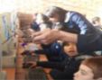
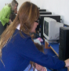
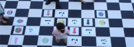

- Aprender haciendo y practicando, no sólo sentado escuchando.
- Enfocado en enseñar la nueva habilidad de las Bases Curriculares.
- Sistemática y constante retroalimentación de pares.
- Se integran activamente los estudiantes del participante.
- Estrategia situada en el aula para la adquisición de competencias.
- Gran variedad de ejercicios y actividades transversales.
- Activo uso de la tecnología.
- Presencial un sábado cada mes, resto en línea por Internet.
FUNDAMENTACIÓN TEÓRICA
¿Por qué enseñar modelamiento matemático? Por una parte, desde el año 2012 en las nuevas bases curriculares de educación básica (ver Seminario Internacional) se incluye esta habilidad y está también propuesta para incluirla en enseñanza media. Por otra parte, esta es una habilidad clave para enfrentar los desafíos de la vida profesional y personal actual. El uso de modelos matemáticos es una componente indispensable y crítica en la aplicación de las matemáticas. Tal como Arquímedes ya lo hacía, muchos matemáticos, ingenieros y científicos hacen modelos matemáticos para resolver problemas prácticos. Por esta razón muchos países están incorporando esta habilidad en sus currículos. Por ejemplo, la prueba internacional PISA de la OCDE la incluye desde 2003, la prueba TIMMS también, el currículo de Alemania y el Common Core de Estados Unidos también ya incorporan esta habilidad. Sin embargo, el modelamiento matemático es una habilidad desconocida para los docentes, dado que es primera vez que se incluye explícitamente en el currículo. Existe un gran vacío que este programa viene a ayudar a llenar.
¿Qué es lo nuevo que hace ahora tan importante el modelamiento matemático? Con el creciente uso del computador y las simulaciones computacionales, se potencian los modelos matemáticos. Antes, con un modelo matemático medianamente complejo era muy difícil realizar los cálculos para entender lo que predecía el modelo en diversas situaciones. Ahora en cambio, con el poder computacional existente hay una enorme capacidad de calcular lo que los modelos predicen en diferentes escenarios y de esta manera mejorar la toma de decisiones. Por esta razón, la tendencia mundial es complementar las habilidades matemáticas tradicionales con la de construir modelos matemáticos.
El programa tiene por objetivo que el participante adquiera las estrategias y competencias para desarrollar esta habilidad en sus estudiantes. Cada participante debe incluir a sus alumnos inscribiéndolos en la plataforma de manera que también participen activamente y de esta forma desde el inicio poner en práctica en aula con sus alumnos lo que va aprendiendo. Es un aprendizaje situado y formativo. Las actividades del participante y de sus estudiantes son seguidas en línea y retroalimentadas sistemáticamente por el equipo docente y por pares que también participan en el diplomado. Terminado el programa el participante tendrá cientos de horas de práctica en enseñar modelamiento matemático y una gran cantidad de retroalimentación personalizada. Con esta metodología de aprender haciendo y permanente evaluación formativa, el participante logrará adquirir un gran dominio y efectividad en enseñar modelamiento matemático a estudiantes de la escuela donde se desempeña.
MOOC Blended
8 meses, total 560 horas
- Presencial: un sábado cada mes
- Video streamimg todos los miércoles de 16:00 a 18:00
- Enviar 1 video semanal a ser analizado por pares
- Inscribir 1 curso con sus estudiantes con 2 sesiones web semanales
|  |  |
IDENTIFICACIÓN DEL PROGRAMA
| Nombre del Diplomado | “ESTRATEGIAS Y PRÁCTICAS PARA LA ENSEÑANZA DE LA HABILIDAD DE MODELAMIENTO MATEMÁTICO EN LAS BASES CURRICULARES” |
| Duración del Programa | 8 meses (560 Hrs.) |
| Unidad Académica responsable | Centro de Investigación Avanzada en Educación, Vicerrectoría Asuntos Académicos. Universidad de Chile. Periodista José Carrasco Tapia 75, Santiago. |
| Horario | Sesión presencial 1 Sábado por mes de 09:00 a 18:00 y sesión de video streaming todos los miércoles de 16:00 a 18:00. |
| Período de Clases | Mayo - Diciembre |
| Nombre académico responsable | Prof. Roberto Araya Schulz |
| Costo del programa | Arancel: $ 1.500.000, Matrícula: $ 150.000 |
PLAN DE ESTUDIOS Y CONTENIDOS PROGRAMATICOS
Objetivos del plan de estudios
Con este programa los participantes- Adquirirán las competencias para desarrollar la habilidad de modelamiento matemático en sus estudiantes.
- Dominarán estrategias de uso, selección, ajuste y construcción de modelos matemáticos.
- Dominarán la estrategia de comenzar con modelos concretos, luego computacionales y luego pasar a modelos abstractos.
- Conocerán una gran cantidad de modelos matemáticos en temas transversales, tal como biología, salud, deportes, ciencias sociales, cognición, afectos, relaciones interpersonales, y vida diaria.
- Actualizarán conocimientos y desarrollarán habilidades que les permitan implementar los planes y programas que deben enseñar de acuerdo a las nuevas Bases Curriculares del Ministerio de Educación.
Entre otras competencias que los participantes adquirirán al finalizar el programa están
- Usar, seleccionar, ajustar y crear modelos matemáticos apropiados al nivel y necesidades de sus estudiantes.
- Tomar decisiones de selección de desafíos de modelamiento para diferentes Objetivos de Aprendizaje de las Bases Curriculares.
- Prever estrategias más efectivas para enseñar modelamiento matemático según intereses y temas.
- Utilizar tecnología en línea de asignación de ejercicios de modelamiento y de monitoreo de los avances de estudiantes.
- Utilizar videos de clase para estudiar prácticas, e identificar la estructura y la dinámica social en el aula al hacer actividades de modelamiento matemático.
- Usar tecnología computacional para simular modelos.
METODOLOGÍA
El método de enseñanza es de tecnología MOOC (Massive Open Online Course) mezclado con actividad presencial. La principal actividad se desarrollará fundamentalmente en la misma aula del participante con sus propios estudiantes. Es una metodología situada en el aula y con evaluación formativa sistemática y permanente. Por una parte, cada participante grabará en video una sesión a la semana y la enviará a un servidor del curso. Al mismo tiempo analizará en forma anónima grabaciones de sesiones realizadas por pares utilizando rúbrica de evaluación. Por otra parte, cada semana el participante asignará actividades a sus estudiantes en plataforma web para que éstos la realicen en dos sesiones de laboratorio. Las actividades serán de modelamiento y ajustadas a los objetivos de aprendizaje que corresponden a esa semana según su planificación. Durante la sesión en los que sus estudiantes trabajen el participante recibirá instantáneamente retroalimentación del progreso de cada estudiante, especialmente los que vayan teniendo más dificultades y un aviso de los ejercicios o actividades que están significado más problema al curso. Además recibirá un reporte semanal de avance por Objetivos de Aprendizaje y Habilidades.Cada miércoles por video streaming recibirán los conceptos y estrategias claves así como las instrucciones de los trabajos de la semana, las instrucciones de grabación de clases, el análisis de los trabajos realizados por los alumnos de cada participante y la planificación de las clases de la próxima semana.
Un sábado de cada mes se realizará una reunión presencial donde los participantes recibirán un compendio de las actividades realizadas por todos y un resumen de los conceptos involucrados. Luego, individual y anónimamente en sus notebooks personales, los participantes examinarán videos de clases de otros participantes. A continuación, los participantes trabajarán en equipo ajustando sus clases según las indicaciones de los pares anónimos. Finalmente, los participantes recibirán una introducción a los conceptos y estrategias para el mes siguiente. En el Módulo 6, parte de la actividad se realizará en un patio o parque, en los que construirán modelos físicos concretos.
Al inicio del programa cada participante recibirá una carpeta física del curso y una cuenta en la plataforma web para él y cada uno de sus estudiantes.
En síntesis hay varias características metodológicas que hacen este programa muy diferente de otros:
- Enfocado en cómo enseñar la nueva habilidad de las Bases Curriculares.
- Metodología de aprender haciendo y practicando, y no sentado escuchando.
- Sistemática y constante retroalimentación de pares.
- Participan activamente los estudiantes del participante.
- Estrategia situada en el aula para la adquisición de competencias.
- Gran variedad de ejercicios y actividades transversales (biología, salud, deportes, ciencias sociales, cognición, afectos, relaciones interpersonales y vida diaria).
-
Uso activo de la tecnología
- Video streaming semanal con participación en línea.
- Profundo análisis entre pares de videos de clases soportado por plataforma web.
- Intenso uso de plataforma por estudiantes propios de cada participante.
- Actividades concretas (catapultas, cohetes, botes de hormigón) monitoreadas con tics.
- Juegos de tablero, juegos en línea y torneos entre escuelas de profesores participantes.
Contenidos
| Módulo 1 | Las nuevas habilidades de las Bases Curriculares y cómo enseñarlas. |
| Módulo 2 | ¿Cómo enseñar Modelamiento Matemático con Juegos de Tablero? |
| Módulo 3 | ¿Cómo enseñar Modelamiento Matemático con Estanques? |
| Módulo 4 | ¿Cómo enseñar Modelamiento Matemático para descubrir patrones estadísticos? |
| Módulo 5 | ¿Cómo enseñar Modelamiento Matemático en la Selección Natural y Sexual? |
| Módulo 6 | ¿Cómo enseñar Modelamiento Matemático con actividades fuera de la sala de clase? |
| Módulo 7 | Estudio de clases de Modelamiento Matemático. |
| Módulo 8 | ¿Cómo evaluar el aprendizaje del Modelamiento Matemático. |
| Video Modelamiento de Catapultas  Video Modelamiento en Decisiones |
Módulos y contenidos
| Módulo 1 | Las nuevas habilidades de las Bases Curriculares y cómo enseñarlas. |
|---|---|
| Descripción del módulo | Los participantes conocerán las tendencias mundiales de inclusión de la habilidad de modelamiento matemático, las justificaciones, ejemplos, y las estrategias de enseñanza. |
| Contenidos |
|
| Horas | Total 70 horas (presenciales 9 horas) |
| Módulo 2 | ¿Cómo enseñar Modelamiento Matemático con Juegos de Tablero? |
|---|---|
| Descripción del módulo | En este módulo los participantes aprenderán a enseñar a usar, seleccionar y ajustar diversos juegos de tablero que modelan movimientos de organismos y/o partículas. |
| Contenidos |
|
| Horas | Total 70 horas (presenciales 9 horas) |
| Módulo 3 | ¿Cómo enseñar Modelamiento Matemático con Estanques? |
|---|---|
| Descripción del módulo | En este módulo los participantes aprenderán a enseñar a usar, seleccionar y ajustar modelos tipo estanques (acumuladores) y modelar dinámicas en tiempo discreto de estanques de agua, sistema digestivo, estados emocionales, relaciones de pareja. |
| Contenidos |
|
| Horas | Total 70 horas (presenciales 9 horas) |
| Módulo 4 | ¿Cómo enseñar Modelamiento Matemático para descubrir patrones estadísticos? |
|---|---|
| Descripción del módulo | En este módulo los participantes aprenderán cómo motivar a sus estudiantes a encontrar patrones, cómo enseñar estrategias que aprovechen la capacidad innata del sistema visual de encontrar patrones, y a enseñar diversas situaciones de la vida profesional y personal donde es importante ser eficiente en la búsqueda de patrones. |
| Contenidos |
|
| Horas | Total 70 horas (presenciales 9 horas) |
| Módulo 5 | ¿Cómo enseñar Modelamiento Matemático en la Selección Natural y Sexual? |
|---|---|
| Descripción del módulo | En este módulo los participantes aprenderán a enseñar el modelamiento matemático en la selección natural y sexual de los organismos. Aprenderán estrategias para enseñar cómo representar patrones en características de especies a través de diferentes generaciones y a describir la evolución de rasgos. |
| Contenidos |
|
| Horas | Total 70 horas (presenciales 9 horas) |
| Módulo 6 | ¿Cómo enseñar Modelamiento Matemático con actividades fuera de la sala de clase? |
|---|---|
| Descripción del módulo | En este módulo los participantes aprenderán a enseñar a construir modelos concretos y matemáticos en diversas actividades a realizarse en el patio. |
| Contenidos |
|
| Horas | Total 70 horas (presenciales 9 horas) |
| Módulo 7 | Estudio de clases de Modelamiento Matemático |
|---|---|
| Descripción del módulo | En este módulo los participantes aprenderán a analizar clases de matemáticas y en particular lecciones Modelamiento Matemático. |
| Contenidos |
|
| Horas | Total 70 horas (presenciales 9 horas) |
| Módulo 8 | ¿Cómo evaluar el aprendizaje del Modelamiento Matemático? |
|---|---|
| Descripción del módulo | En este módulo los participantes revisarán estrategias de medición en línea, formativa y evaluativa de las habilidades de modelamiento matemático así como los objetivos de aprendizaje. |
| Contenidos |
|
| Horas | Total 70 horas (presenciales 9 horas) |
Total de horas programa: 560 horas (presenciales 72 horas).
Intenso uso de tecnología
- Video streaming semanal con participación en línea.
- Análisis entre pares de videos de clases soportado por plataforma web.
- Intenso uso de plataforma por estudiantes propios de cada participante.
- Actividades concretas.
- Catapultas.
- Cohetes.
- Botes de hormigón.
- Juegos en línea y torneos entre escuelas de profesores participantes.
- Catapultas.
- Cohetes.
- Botes de hormigón.
 |
||
|
Video Modelamiento en el Fútbol |
EVALUACIÓN
La evaluación del curso se realizará a través de trabajos de carácter aplicado en cada uno de los módulos y una nota del trabajo final.En su conjunto las evaluaciones correspondientes a las temáticas desarrolladas a lo largo del diplomado contarán con una ponderación del 80% sobre la nota final del curso.
Requisitos Aprobación Módulos:
- 100% asistencias presenciales los sábados.
- 90% asistencias miércoles clases por videostreaming.
- 200 ejercicios realizados por cada alumno del participante de uno de sus cursos, todos hechos cada semana en plataforma internet.
- 100% grabación y envío de videos
- Aprobación de todos los videos, uno por semana, evaluado por pares
- Aprobación presentación presencial mensual, cuya nota mínima de aprobación es un cuatro (4,0).
Además los estudiantes deberán desarrollar un trabajo final (tesina) en el que se haga explícita la adquisición de conocimientos teóricos, se revise y ajusten los trabajos de cada módulo, se planifique y ejecute una clase con modelamiento matemático, los estudiantes realicen en dos sesiones las actividades en la plataforma, se registre en video la clase y se analice el impacto obtenido. Este trabajo tendrá un valor de 20% sobre la nota final.
En resumen se realizarán:
- Ocho evaluaciones (una por cada unidad temática: trabajo aplicado correspondientes al 80% de la nota final).
- Un trabajo final de curso de carácter conceptual y aplicado correspondiente al 20% de la nota final.
La escala de nota utilizada será de uno (1,0) a siete (7,0), siendo la nota mínima de aprobación un cuatro (4,0). Todas las notas de los 8 módulos debe ser como mínimo un cuatro (4,0) así como la nota mínima de la evaluación final debe ser cuatro (4,0). La nota máxima es un siete (7,0).
EQUIPO DOCENTE DEL PROGRAMA
El equipo docente es multidisciplinario, integrando investigadores y profesores con gran experiencia en el aula y en el uso de plataformas web.- Roberto Araya Schulz, Ph.D. Ingeniería Eléctrica, Universidad de California Los Angeles y Magíster Matemáticas Aplicadas, Universidad de Chile, investigador asociado al CIAE.
- Pablo Dartnell Roy, Ph.D. Matemáticas, Yale University e Ingeniero Civil Matemático, Universidad de Chile, investigador asociado al CIAE y al Centro de Modelamiento de la Universidad de Chile.
- Leonor Varas Scheuch, Doctor Ciencias de la Ingeniería especializado en Modelamiento Matemático, Universidad de Chile, e Ingeniero Civil Matemático, Universidad de Chile, investigador asociado al CIAE y al Centro de Modelamiento Matemático de la Universidad de Chile.
- Paulina Jaure Echeverría, Profesora de Estado en Matemáticas y Computación, USACH, y postítulo en Didácticas de las Matemáticas, Pontificia Universidad Católica de Valparaíso.
- Elena Salinas Vásquez, profesora de Educación General Básica Universidad de Chile, Magíster en Desarrollo Cognitivo, Universidad Diego Portales.
PREGUNTAS FRECUENTES
- Requisitos
- ¿Qué requisitos existen para poder tomar el Diplomado?
Debe ser titulado y hacer clase de matemáticas en un curso de educación básica y/o media. - Soy de un lugar muy alejado, por lo que no puedo viajar una vez al mes a Santiago. ¿Qué puedo
hacer?
Si reúne a un gran número de interesados de su localidad puede contactarnos para estudiar la factibilidad que uno de nuestros profesores viaje esos sábados a su localidad.
- Técnicas
- Yo no sé grabar ni subir videos. ¿Cómo lo hago?
En el Diplomado se enseñará este proceso en la primera clase presencial. Además se recomendará cámaras y cómo asegurar que el sonido e imágenes se capturen bien. - No existe plataforma internet en mi establecimiento para que los estudiantes de mi curso realicen
ejercicios. ¿Cómo lo hago?
El Diplomado entrega acceso a la plataforma conectaideas para usted y los estudiantes de su curso. En la primera sesión aprenderá a operarla. - En mi establecimiento existe otra plataforma ¿Cómo lo hago?
El Diplomado usará la plataforma conectaideas de manera que todos los participantes compartan una misma experiencia y tipos de actividad. Eso no significa deje de usar la otra plataforma para otras actividades ajenas al Diplomado. - ¿Por qué debe participar un curso mío y tengo que inscribir a los estudiantes de ese curso?
En este diplomado se aprende enseñando y haciendo que los estudiantes del participante pongan en práctica el modelamiento matemático. La plataforma nos dice cómo lo están haciendo y lo hace de una manera uniforme, de manera que nos facilita enormemente el proceso de aprender de la experiencia de otros participantes y sus estudiantes. - ¿Podemos mis estudiantes y yo conectarnos a la plataforma desde la casa?
Sí. Puede conectarse a la plataforma desde cualquier lugar con acceso a internet y acceder de allí a todos los ejercicios. - ¿Qué ancho de banda necesito?
En su establecimiento el ideal es la fibra óptica que instala ENLACES. Lo recomendado es 100kbps por cada computador conectado a internet, esto significa que si el laboratorio de su colegio tiene 40 computador se requiere de un enlace a internet de 4Mbps. - ¿Qué puedo hacer si me interesa el Diplomado y no cuento con computador propio?
Puede utilizar uno del establecimiento.
- Horario
- ¿Cuántas horas realmente me ocupará?
Son 9 horas presenciales cada mes, que se logran asistiendo un sábado en cada mes. Gran parte de las actividades las realizará en su sala de clases durante las clases normales. Cada semana debe grabar un video de 45 minutos y subir la grabación a internet. Además debe hacer que sus estudiantes realicen actividades de modelamiento en la plataforma web del diplomado. Adicionalmente debe participar vía internet cada semana de una sesión de 2 horas los miércoles de 16:00 a 18:00 por video streaming. Además cada semana deberá revisar 4 videos (de 45 minutos cada uno) producidos por otros participantes del diplomado. - ¿Puedo ver el video streaming desde mi establecimiento?
Lo puede hacer desde su establecimiento, casa y/o un café internet. - ¿Puedo ver los videos de los colegas participantes en el fin de semana?
Sí. Lo puede ver en casa, lo puede ver en el establecimiento o en celulares con plan internet que pueda ver videos youtube. - ¿Qué sucederá si no puedo cumplir con el 100 % de asistencia los días sábados, debido a alguna razón de
salud o familiar que realmente se justifique?
Casos especiales serán analizados en forma personalizada.
- Financieras
- ¿Cómo se si mi establecimiento puede financiar mi Diplomado por ley SEP?
Consulte si su establecimiento ha incorporado en su PME (Proyecto de Mejoramiento Educativo) como acción a realizar el perfeccionamiento y capacitación de los profesores para mejorar los aprendizajes de los alumnos prioritarios. - No tengo cámara ni micrófono ni implementos para realizar el Diplomado. ¿Qué puedo hacer?
Consulte si su establecimiento ha incorporado en su PME (Proyecto de Mejoramiento Educativo) la adquisición de equipamiento para mejorar los aprendizajes de los alumnos prioritarios.
- Otras
- ¿A quién debo dirigirme para hacer consultas sobre el diplomado?
En modelamiento@ciae.uchile.cl un equipo del diplomado estará atengo a responder sus consultas.
PREINSCRIPCIÓN
La inscripción al diplomado debe realizarlo en el siguiente LINK